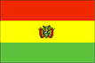
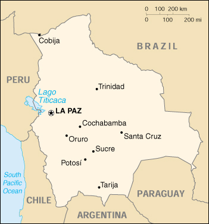

{kind=link}


| Bolivia |  |
|
|  | |
| Introduction |
Background: Bolivia, named after independence fighter Simon BOLIVAR, broke away from Spanish rule in 1825; much of its subsequent history has consisted of a series of nearly 200 coups and counter-coups. Comparatively democratic civilian rule was established in the 1980s, but leaders have faced difficult problems of deep-seated poverty, social unrest, and drug production. Current goals include attracting foreign investment, strengthening the educational system, continuing the privatization program, and waging an anti-corruption campaign.
| Geography |
Location: Central South America, southwest of Brazil
Geographic coordinates: 17 00 S, 65 00 W
Map references: South America
Area:
total:
1,098,580 sq km
land:
1,084,390 sq km
water:
14,190 sq km
Area - comparative: slightly less than three times the size of Montana
Land boundaries:
total:
6,743 km
border countries:
Argentina 832 km, Brazil 3,400 km, Chile 861 km, Paraguay 750 km, Peru 900 km
Coastline: 0 km (landlocked)
Maritime claims: none (landlocked)
Climate: varies with altitude; humid and tropical to cold and semiarid
Terrain: rugged Andes Mountains with a highland plateau (Altiplano), hills, lowland plains of the Amazon Basin
Elevation extremes:
lowest point:
Rio Paraguay 90 m
highest point:
Nevado Sajama 6,542 m
Natural resources: tin, natural gas, petroleum, zinc, tungsten, antimony, silver, iron, lead, gold, timber, hydropower
Land use:
arable land:
2%
permanent crops:
0%
permanent pastures:
24%
forests and woodland:
53%
other:
21% (1993 est.)
Irrigated land: 1,750 sq km (1993 est.)
Natural hazards: cold, thin air of high plateau is obstacle to efficient fuel combustion, as well as to physical activity by those unaccustomed to it from birth; flooding in the northeast (March-April)
Environment - current issues: the clearing of land for agricultural purposes and the international demand for tropical timber are contributing to deforestation; soil erosion from overgrazing and poor cultivation methods (including slash-and-burn agriculture); desertification; loss of biodiversity; industrial pollution of water supplies used for drinking and irrigation
Environment - international agreements:
party to:
Biodiversity, Climate Change, Climate Change-Kyoto Protocol, Desertification, Endangered Species, Hazardous Wastes, Law of the Sea, Marine Dumping, Nuclear Test Ban, Ship Pollution, Tropical Timber 83, Tropical Timber 94, Wetlands
signed, but not ratified:
Environmental Modification, Marine Dumping, Marine Life Conservation, Ozone Layer Protection
Geography - note: landlocked; shares control of Lago Titicaca, world's highest navigable lake (elevation 3,805 m), with Peru
| People |
Population: 8,152,620 (July 2000 est.)
Age structure:
0-14 years:
39.11% (male 1,624,404; female 1,564,057)
15-64 years:
56.42% (male 2,247,013; female 2,352,824)
65 years and over:
4.47% (male 164,473; female 199,849) (2000 est.)
Population growth rate: 1.83% (2000 est.)
Birth rate: 28.15 births/1,000 population (2000 est.)
Death rate: 8.36 deaths/1,000 population (2000 est.)
Net migration rate: -1.47 migrant(s)/1,000 population (2000 est.)
Sex ratio:
at birth:
1.05 male(s)/female
under 15 years:
1.04 male(s)/female
15-64 years:
0.96 male(s)/female
65 years and over:
0.82 male(s)/female
total population:
0.98 male(s)/female (2000 est.)
Infant mortality rate: 60.44 deaths/1,000 live births (2000 est.)
Life expectancy at birth:
total population:
63.7 years
male:
61.19 years
female:
66.34 years (2000 est.)
Total fertility rate: 3.66 children born/woman (2000 est.)
Nationality:
noun:
Bolivian(s)
adjective:
Bolivian
Ethnic groups: Quechua 30%, Aymara 25%, mestizo (mixed white and Amerindian ancestry) 30%, white 15%
Religions: Roman Catholic 95%, Protestant (Evangelical Methodist)
Languages: Spanish (official), Quechua (official), Aymara (official)
Literacy:
definition:
age 15 and over can read and write
total population:
83.1%
male:
90.5%
female:
76% (1995 est.)
| Government |
Country name:
conventional long form:
Republic of Bolivia
conventional short form:
Bolivia
local long form:
Republica de Bolivia
local short form:
Bolivia
Data code: BL
Government type: republic
Capital: La Paz (seat of government); Sucre (legal capital and seat of judiciary)
Administrative divisions: 9 departments (departamentos, singular - departamento); Chuquisaca, Cochabamba, Beni, La Paz, Oruro, Pando, Potosi, Santa Cruz, Tarija
Independence: 6 August 1825 (from Spain)
National holiday: Independence Day, 6 August (1825)
Constitution: 2 February 1967; revised in August 1994
Legal system: based on Spanish law and Napoleonic Code; has not accepted compulsory ICJ jurisdiction
Suffrage: 18 years of age, universal and compulsory (married); 21 years of age, universal and compulsory (single)
Executive branch:
chief of state:
President Hugo BANZER Suarez (since 6 August 1997); Vice President Jorge Fernando QUIROGA Ramirez (since 6 August 1997); note - the president is both the chief of state and head of government
head of government:
President Hugo BANZER Suarez (since 6 August 1997); Vice President Jorge Fernando QUIROGA Ramirez (since 6 August 1997); note - the president is both the chief of state and head of government
cabinet:
Cabinet appointed by the president
elections:
president and vice president elected on the same ticket by popular vote for five-year terms; election last held 1 June 1997 (next to be held June 2002)
election results:
Hugo BANZER Suarez elected president; percent of vote - Hugo BANZER Suarez (ADN) 22%; Jaime PAZ Zamora (MIR) 17%, Juan Carlos DURAN (MNR) 18%, Ivo KULJIS (UCS) 16%, Remedios LOZA (CONDEPA) 17%; no candidate received a majority of the popular vote; Hugo BANZER Suarez won a congressional runoff election on 5 August 1997 after forming a "megacoalition" with MIR, UCS, CONDEPA, NFR and PDC
Legislative branch:
bicameral National Congress or Congreso Nacional consists of Chamber of Senators or Camara de Senadores (27 seats; members are directly elected by popular vote to serve five-year terms) and Chamber of Deputies or Camara de Diputados (130 seats; members are directly elected by popular vote to serve five-year terms)
elections:
Chamber of Senators and Chamber of Deputies - last held 1 June 1997 (next to be held June 2002)
election results:
Chamber of Senators - percent of vote by party - NA; seats by party - ADN 11, MIR 7, MNR 4, CONDEPA 3, UCS 2; Chamber of Deputies - percent of vote by party - NA; seats by party - ADN 32, MNR 26, MIR 23, UCS 21, CONDEPA 19, MBL 5, IU 4
Judicial branch: Supreme Court (Corte Suprema), judges appointed for 10-year terms by National Congress
Political parties and leaders:
Alternative of Democratic Socialism or ASD [Jerjes JUSTINIANO]; April 9 Revolutionary Vanguard or VR-9 [Carlos SERRATE]; Bolivian Communist Party or PCB [Marcos DOMIC]; Bolivian Renovating Alliance or ARBOL [Marcelo FERNANDEZ, Hugo VILLEGAS]; Bolivian Socialist Falange or FSB [leader NA]; Christian Democrat or PDC [Benjamin MIGUEL]; Civic Solidarity Union or UCS [Johnny FERNANDEZ]; Conscience of the Fatherland or CONDEPA [Remedios LOZA Alvarado]; Free Bolivia Movement or MBL [Antonio ARANIBAR]; Front of Katarista Unity or FULKA [Genaro FLORES]; Front of National Salvation or FSN [Manual MORALES Davila]; Katarismo National Unity or KND [Filepe KITTELSON]; Movement of the Revolutionary Left or MIR [Oscar EID]; Movement Towards Socialism-Popular Instrument for Solidarity with the People or MAS-IPSP [leader Evo MORALES]; Nationalist Democratic Action or ADN [Enrique TORO]; Nationalist Katarista Movement or MKN [Fernando UNTOJA]; Nationalist Revolutionary Movement or MNR [Gonzalo SANCHEZ DE LOZADA]; New Republican Force or NFR [Manfred REYES VILLA]; New Youth Force [Alfonso SAAVEDRA Bruno]; Patriotic Axis of Convergence or EJE-P [Ramiro BARRANECHEA]; Popular Patriotic Movement or MPP [Julio MANTILLA]; Revolutionary Front of the Left or FRI [Oscar ZAMORA]; Socialist Party One or PS-1 [leader NA]; Solidarity and Democracy or SYD [leader NA]; Tupac Katari Revolutionary Liberation Movement or MRTK-L [Victor Hugo CARDENAS Conde]; United Left or IU [Marcos DOMIC]; Unity and Progress Movement or MUP [Ivo KULJIS]
note:
political blocs include: left - MBL, EJE-P, VR-9, ASD, FRI, PCB, IU, FSN, PS-1, FSB, and MAS; center left - MIR, PDC, and New Youth Force; center - MNR; center right - ADN and NFR; populist - UCS, CONDEPA, SYD, MUP, and MPP; evangelical - ARBOL; indigenous - MRTK-L, MKN, and KND
Political pressure groups and leaders: Cocalero Group
International organization participation: CAN, ECLAC, FAO, G-11, G-77, IADB, IAEA, IBRD, ICAO, ICRM, IDA, IFAD, IFC, IFRCS, ILO, IMF, IMO, Intelsat, Interpol, IOC, IOM, ITU, LAES, LAIA, Mercosur (associate), MONUC, NAM, OAS, OPANAL, OPCW, PCA, RG, UN, UNCTAD, UNESCO, UNIDO, UNMIK, UNTAET, UPU, WCL, WFTU, WHO, WIPO, WMO, WToO, WTrO
Diplomatic representation in the US:
chief of mission:
Ambassador Marlene FERNANDEZ del Granado
chancery:
3014 Massachusetts Avenue NW, Washington, DC 20008
telephone:
[1] (202) 483-4410
FAX:
[1] (202) 328-3712
consulate(s) general:
Los Angeles, Miami, New York, and San Francisco
Diplomatic representation from the US:
chief of mission:
Ambassador Donna Jean HRINAK
embassy:
Avenida Arce 2780, San Jorge, La Paz
mailing address:
P. O. Box 425, La Paz; APO AA 34032
telephone:
[591] (2) 430251
FAX:
[591] (2) 433900
Flag description: three equal horizontal bands of red (top), yellow, and green with the coat of arms centered on the yellow band; similar to the flag of Ghana, which has a large black five-pointed star centered in the yellow band
| Economy |
Economy - overview: Bolivia, long one of the poorest and least developed Latin American countries, has made considerable progress toward the development of a market-oriented economy. Successes under President SANCHEZ DE LOZADA (1993-1997) included the signing of a free trade agreement with Mexico and the Southern Cone Common Market (Mercosur) as well as the privatization of the state airline, telephone company, railroad, electric power company, and oil company. His successor, Hugo BANZER Suarez has tried to further improve the country's investment climate with an anticorruption campaign. Growth slowed in 1999, in part due to tight government budget policies, which limited needed appropriations for anti-poverty programs, and the fallout from the Asian financial crisis. Growth should rebound to perhaps 4% in 2000 given reasonably favorable world commodity prices.
GDP: purchasing power parity - $24.2 billion (1999 est.)
GDP - real growth rate: 2% (1999 est.)
GDP - per capita: purchasing power parity - $3,000 (1999 est.)
GDP - composition by sector:
agriculture:
16.6%
industry:
35.5%
services:
47.9% (1998 est.)
Population below poverty line: 70% (1999 est.)
Household income or consumption by percentage share:
lowest 10%:
2.3%
highest 10%:
31.7% (1990)
Inflation rate (consumer prices): 2.1% (1999 est.)
Labor force: 2.5 million
Labor force - by occupation: agriculture NA%, industry NA%, services NA%
Unemployment rate: 11.4% (1997) with widespread underemployment
Budget:
revenues:
$2.7 billion
expenditures:
$2.7 billion including capital expenditures of $NA (1998)
Industries: mining, smelting, petroleum, food and beverages, tobacco, handicrafts, clothing
Industrial production growth rate: 4% (1995 est.)
Electricity - production: 2.576 billion kWh (1998)
Electricity - production by source:
fossil fuel:
42.43%
hydro:
55.75%
nuclear:
0%
other:
1.82% (1998)
Electricity - consumption: 2.412 billion kWh (1998)
Electricity - exports: 4 million kWh (1998)
Electricity - imports: 20 million kWh (1998)
Agriculture - products: soybeans, coffee, coca, cotton, corn, sugarcane, rice, potatoes; timber
Exports: $1.1 billion (f.o.b., 1999 est.)
Exports - commodities: soybeans, natural gas, zinc, gold, wood
Exports - partners: UK 16%, US 12%, Peru 11%, Argentina 10%, Colombia 7% (1998)
Imports: $1.6 billion (c.i.f., 1999 est.)
Imports - commodities: capital goods, raw materials and semi-manufactures, chemicals, petroleum, food
Imports - partners: US 32%, Japan 24%, Brazil 12%, Argentina 12%, Chile 7%, Peru 4%, Germany 3% (1998)
Debt - external: $5.7 billion (1999)
Economic aid - recipient: $588 million (1997)
Currency: 1 boliviano ($B) = 100 centavos
Exchange rates: bolivianos ($B) per US$1 - 6.0065 (January 2000), 5.8124 (1999), 5.5101 (1998), 5.2543 (1997), 5.0746 (1996), 4.8003 (1995)
Fiscal year: calendar year
| Communications |
Telephones - main lines in use: 368,874 (1996)
Telephones - mobile cellular: 7,229 (1995)
Telephone system:
new subscribers face bureaucratic difficulties; most telephones are concentrated in La Paz and other cities
domestic:
primary trunk system, which is being expanded, employs digital microwave radio relay; some areas are served by fiber-optic cable; mobile cellular systems are being expanded
international:
satellite earth station - 1 Intelsat (Atlantic Ocean)
Radio broadcast stations: AM 171, FM 73, shortwave 77 (1999)
Radios: 5.25 million (1997)
Television broadcast stations: 48 (1997)
Televisions: 900,000 (1997)
Internet Service Providers (ISPs): 5 (1999)
| Transportation |
Railways:
total:
3,691 km (single track)
narrow gauge:
3,652 km 1.000-m gauge; 39 km 0.760-m gauge (13 km electrified) (1995)
Highways:
total:
52,216 km
paved:
2,872 km (including 27 km of expressways)
unpaved:
49,344 km (1995 est.)
Waterways: 10,000 km of commercially navigable waterways
Pipelines: crude oil 1,800 km; petroleum products 580 km; natural gas 1,495 km
Ports and harbors: none; however, Bolivia has free port privileges in the maritime ports of Argentina, Brazil, Chile, and Paraguay
Merchant marine:
total:
32 ships (1,000 GRT or over) totaling 116,373 GRT/182,283 DWT
ships by type:
bulk 3, cargo 17, chemical tanker 3, container 1, petroleum tanker 6, roll-on/roll-off 2 (1999 est.)
Airports: 1,109 (1999 est.)
Airports - with paved runways:
total:
13
over 3,047 m:
4
2,438 to 3,047 m:
3
1,524 to 2,437 m:
4
914 to 1,523 m:
2 (1999 est.)
Airports - with unpaved runways:
total:
1,096
2,438 to 3,047 m:
3
1,524 to 2,437 m:
67
914 to 1,523 m:
219
under 914 m:
807 (1999 est.)
| Military |
Military branches: Army (Ejercito Boliviano), Navy (Fuerza Naval Boliviana, includes Marines), Air Force (Fuerza Aerea Boliviana), National Police Force (Policia Nacional de Bolivia)
Military manpower - military age: 19 years of age
Military manpower - availability:
males age 15-49:
1,949,267 (2000 est.)
Military manpower - fit for military service:
males age 15-49:
1,269,228 (2000 est.)
Military manpower - reaching military age annually:
males:
86,863 (2000 est.)
Military expenditures - dollar figure: $147 million (FY99)
Military expenditures - percent of GDP: 1.8% (FY99)
| Transnational Issues |
Disputes - international: has wanted a sovereign corridor to the South Pacific Ocean since the Atacama area was lost to Chile in 1884; dispute with Chile over Rio Lauca water rights
Illicit drugs: world's third-largest cultivator of coca (after Peru and Colombia) with an estimated 21,800 hectares under cultivation in 1999, a 45% decrease in overall cultivation of coca from 1998 levels; intermediate coca products and cocaine exported to or through Colombia, Brazil, Argentina, and Chile to the US and other international drug markets; alternative crop program aims to reduce illicit coca cultivation